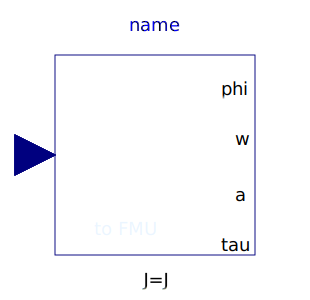
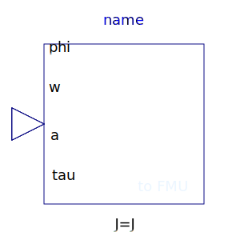
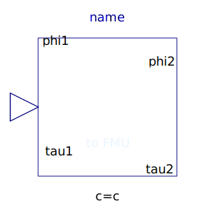

Utility components used by the example models
| Name | Description |
|---|---|
|  DirectInertia | Input/output block of a direct inertia model |
|  InverseInertia | Input/output block of an inverse inertia model |
|
|
Input/output block of a spring/damper model |
|  Spring | Input/output block of a spring model |
|
|
Linear 1D rotational spring and damper in parallel (phi and w are not used as states) |